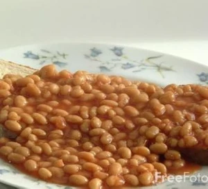

A quick easy delicious recipe for people on the go!
Place both slices of white bread in toaster.
Warm beans on the hob for 3 - 4 mins stirring constantly.
Grate cheese.
Place toast on plate. Pour on beans.
Sprinkle with cheese according to taste.